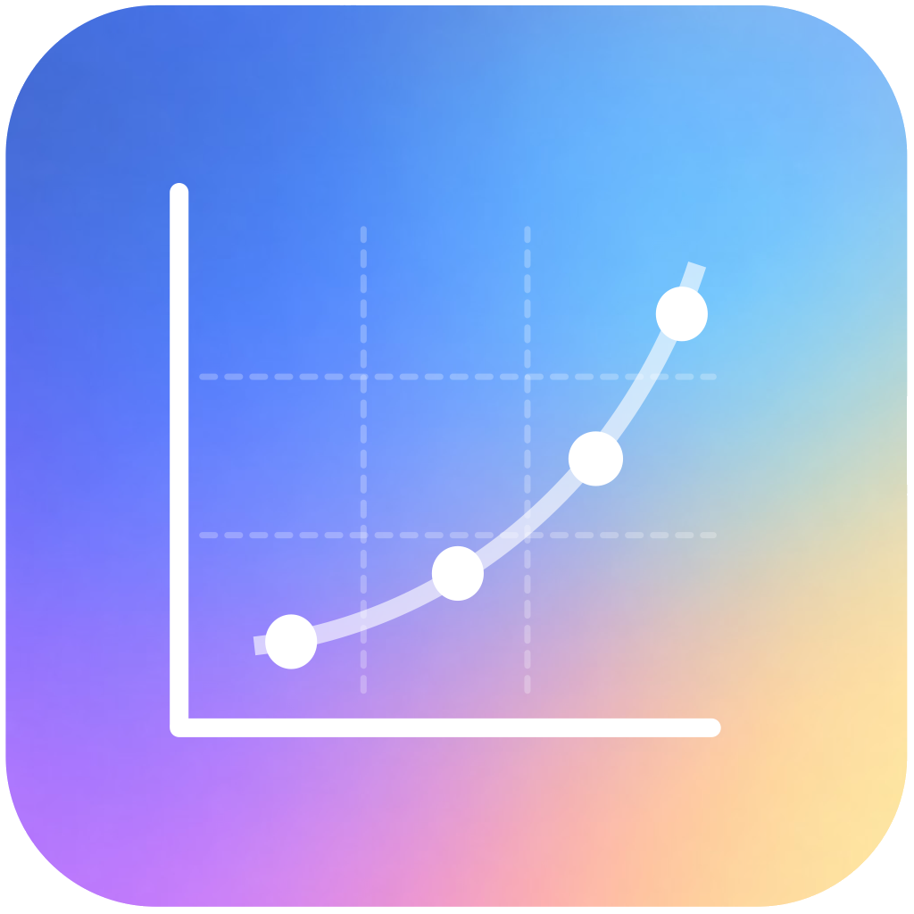

DigitPlot for macOS
DigitPlot Support
DigitPlot helps recover numerical data from plotted figure images with calibration, precise point picking, point adjustment, and CSV export.
Contact SupportContact
For support, bug reports, purchase questions, or feature requests, email x.n.chen@outlook.com.
Common Questions
Do I need an account?
No. DigitPlot does not require a login account.
Where are imported images processed?
Imported images are processed locally on your Mac. DigitPlot uses files selected by the user for digitization and CSV export.
How is DigitPlot purchased?
DigitPlot is purchased upfront from the Mac App Store. The app does not use in-app purchases, subscriptions, accounts, or a trial gate.
Can I reinstall it later?
Yes. Reinstall DigitPlot from the Mac App Store using the Apple ID that purchased the app.
Privacy
DigitPlot does not collect personal data, track users, or require an account. Read the full Privacy Policy.